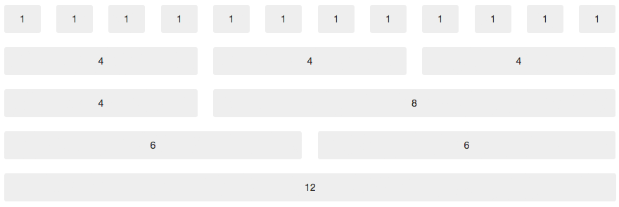

Winston
Tekniken bakom
Responsive web design
Grids
A fluid is a substance that continually deforms (flows) under an applied shear stress
Rutnät – 12, 16 eller 24 kolumner
Fluid vs adaptive grids
Adaptive grid:
- Pixel baserade dimensioner.
- Manuellt ändra höjder/bredder vid definierade breakpoints.
- Vi vet alltid hur innehåller kommer att se ut.
- Kräver mindre testning.
Fluid grid:
- Procent baserade dimensioner.
- Innehåll flödar om och anpassar sig till storleken på sitt förälder-element.
- Kontrollera när innehållet "går sönder". Anpassa där efter.
- Framtidssäkert.

We are blinded by browsers. When it comes to RWD, we think about layouts, and often we should, but we have to keep in mind that we are not rectangle artists. We explore solutions to problems. Browsers think in boxes, but humans shouldn't.
CSS Media Queries
Ja och nej frågor till browsern.
Media types
- all
- aural
- braille
- embossed
- handheld
- projection
- screen
- speech
- tty
- tv
Media features
- width
- height
- device-width
- device-height
- orientation
- aspect-ratio
- device-aspect-ratio
- color
- color-index
- monochrome
- resolution
- scan
- grid
@media (min-width: 33em) {
body {
background-color: papayaWhip;
}
}